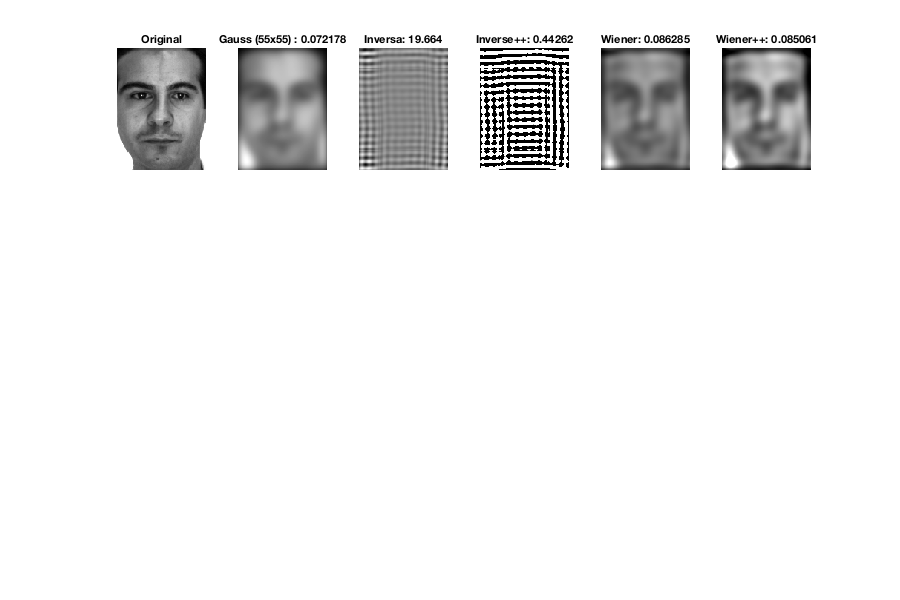
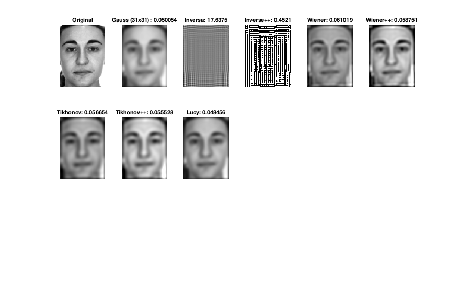
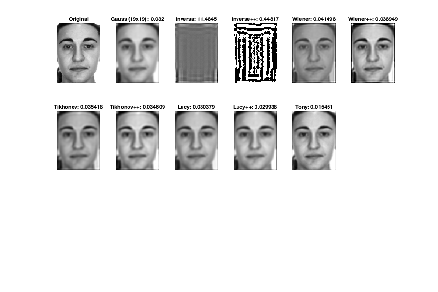
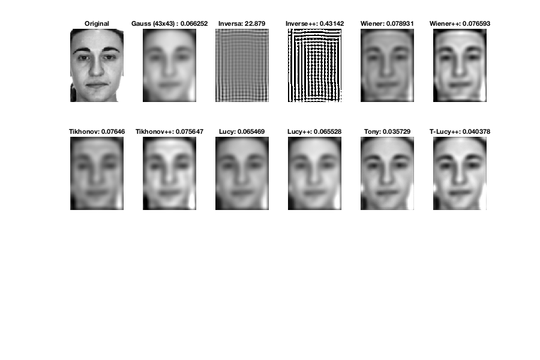

Contents
VARIABLES
close all
global fig;
global display;
global paused;
global face;
global minO;
global maxO;
fig = 1;
display = true;
paused = false;
sizes = [7 19 31 43 55];
faces = [1, 51];
for face_index = 1:2
INITIALIZE FACE PARAMETERS
face = faces(face_index);
if(face == 1)
face = '01';
wiener_noise = [0.00026 0.00057 0.00074 0.00087 0.00097];
tikhonov_np = [1.2 9.5 17.3 26.4 30.3];
lucy_iterations = [2 1 1 1 1];
tony_n = [3 5 7 11 13];
tony_y = [1.5 2.7 3 2.5 2.7];
tony_li = [1 1 1 1 1];
else
face = '51';
wiener_noise = [0.00024 0.00057 0.00084 0.00104 0.00114];
tikhonov_np = [1.3 11.8 20.8 29.3 47.8];
lucy_iterations = [2 1 1 1 1];
tony_n = [3 5 7 11 13];
tony_y = [1.5 2.4 2.9 2.4 2.6];
tony_li = [1 1 1 1 1];
end
path = concat3('images/face_0', face, '_C0.png');
O = im2double(imread(path));
for i = 1:5
yAxis = (0);
s = sizes(i);
PSF = gauss(i, s);
MAIN
fig = figure('rend','painters','pos',[10 10 900 600]);
show(O, "Original", 1);
f = getImage(i);
err = mean(abs(f(:)-O(:)));
degErr = err;
yAxis = cat(2, yAxis, (err));
show(f, "Gauss (" +s + "x" + s+ ") : " + err, 2);
minO = min(f(:));
maxO = max(f(:));
INVERSE
I = inverse(f, PSF);
err = mean(abs(I(:)-O(:)));
show(I, "Inversa: " + err, 3);

INVERSE++
adjust(I, O, "Inverse", 4);

WIENER
W = wiener(f, PSF, wiener_noise(i));
err = mean(abs(W(:)-O(:)));
yAxis = cat(2, yAxis, (err));
show(W, "Wiener: " + err, 5);
WIENER++
err = adjust(W, O, "Wiener", 6);
yAxis = cat(2, yAxis, (err));


TIKHONOV
T = tikhonov(f, PSF, tikhonov_np(i));
err = mean(abs(T(:)-O(:)));
yAxis = cat(2, yAxis, (err));
show(T, "Tikhonov: " + err, 7);

TIKHONOV++
err = adjust(T, O, "Tikhonov", 8);
yAxis = cat(2, yAxis, (err));

LUCY-RICHARDSON
L = lucy(f, PSF, lucy_iterations(i));
err = mean(abs(L(:)-O(:)));
yAxis = cat(2, yAxis, (err));
show(L, "Lucy: " + err, 9);

LUCY-RICHARDSON++
err = adjust(L, O, "Lucy", 10);
yAxis = cat(2, yAxis, (err));
TONY
TONY = Tony(f, PSF, tony_n(i), tony_y(i));
err = mean(abs(TONY(:)-O(:)));
yAxis = cat(2, yAxis, (err));
show(TONY, "Tony: " + err, 11);

TONY-LUCY++
TL = TonyLucy(f, PSF, tony_n(i), tony_y(i), tony_li(i));
err = mean(abs(TL(:)-O(:)));
err = adjust(TL, O, "T-Lucy", 12);
yAxis = cat(2, yAxis, (err));

PLOT GRAPH
p = subplot(3, 6, 13);
set(p, 'position', [0.1,0.15,0.82,0.25]);
plot(yAxis, 'b*');
ylabel('Error');
xlabel('Algoritmo');
label = { 'Original', 'Degradada', 'Wiener', 'Wiener++', 'Tikhonov', 'Tikhonov++', 'Lucy-Richardson', 'Lucy-Richardson++', 'Tony', 'Tony-Lucy++'};
xticklabels(label)
xtickangle(45);
line = refline([0 yAxis(2)]);
line.Color = 'r';
fig.Name = "Analisis para gauss de "+ s + "x" + s;


PRINT MIN
errors = yAxis(2:end);
[x, pos] = min(errors);
fig.Name = "Gauss (" + s + "x" + s + "). Error minimo de " + x + " en " + label(pos + 1) + ". Una mejora de: " + (degErr - x)/degErr*100 + "%";


end
end
FUNCTIONS
function G = getImage(i)
global face;
path = concat5('images/face_0', face, '_G', num2str(i), '.png');
B = im2double((imread(path)));
G = B;
end
function show(A, figTitle, pos)
global display;
if(display)
subplot(3, 6, pos);
imshow(A, []);
title(figTitle);
end
end
function I = inverse(f, PSF)
I = wiener(f, PSF, 0);
end
function W = wiener(f, PSF, noise_var)
nsr = noise_var / var(f(:));
W =deconvwnr(f, PSF, nsr);
end
function T = tikhonov(f, PSF, NP)
T = deconvreg(f, PSF, NP);
end
function L = lucy(f, PSF, param)
L = deconvlucy(f, PSF, param);
end
function B = blind(f, PSF, param)
B = deconvblind(f, PSF, param);
end
function err = adjust(I, O, name, p)
global minO;
global maxO;
IM = I;
IM(I > maxO) = maxO;
IM(I < minO) = minO;
err = mean(abs(IM(:)-O(:)));
show(IM, name + "++: " + err, p);
end
function str = concat3(s1, s2, s3)
str = strcat(s1, s2);
str = strcat(str, s3);
end
function str = concat5(s1, s2, s3, s4, s5)
str1 = concat3(s1, s2, s3);
str2 = strcat(s4, s5);
str = strcat(str1, str2);
end